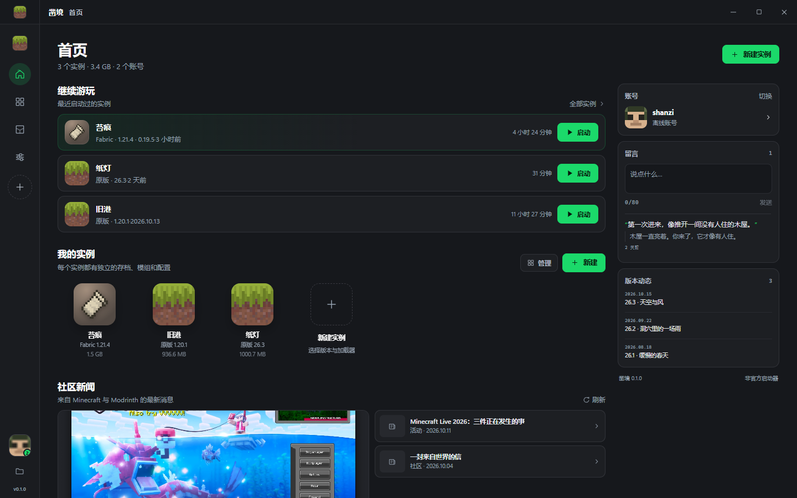
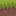
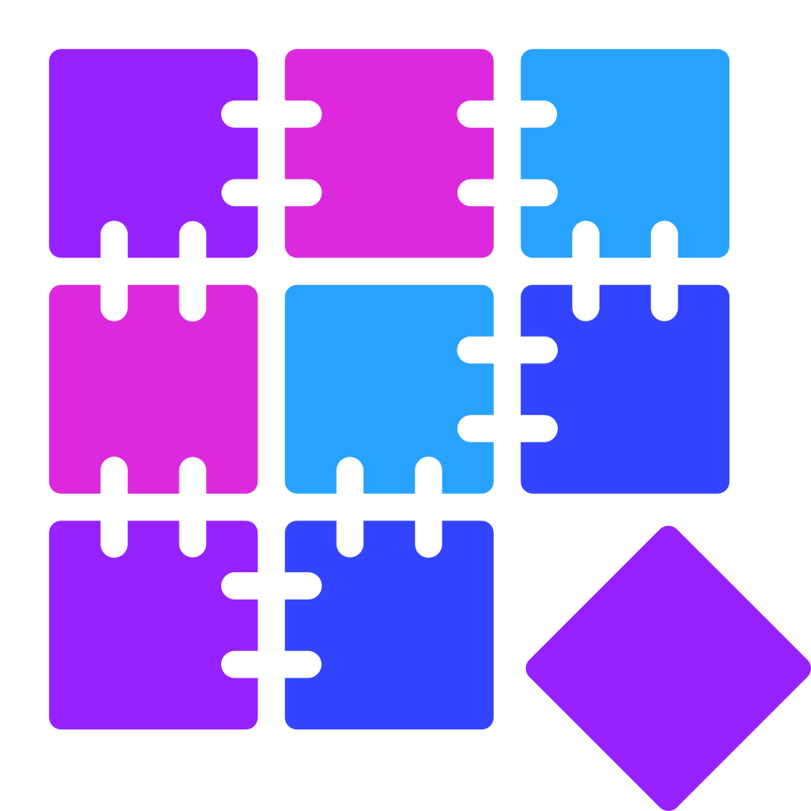
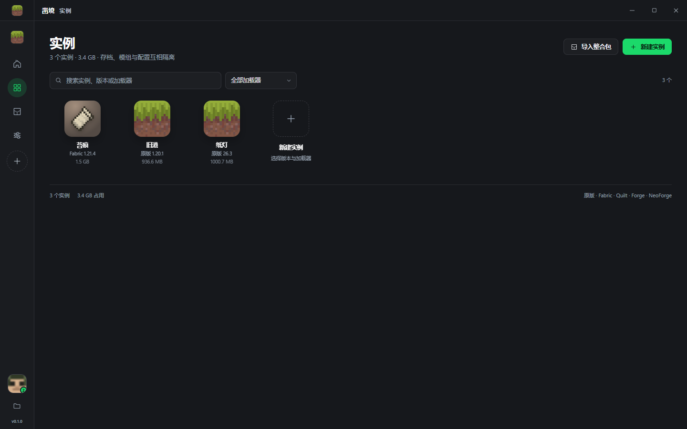
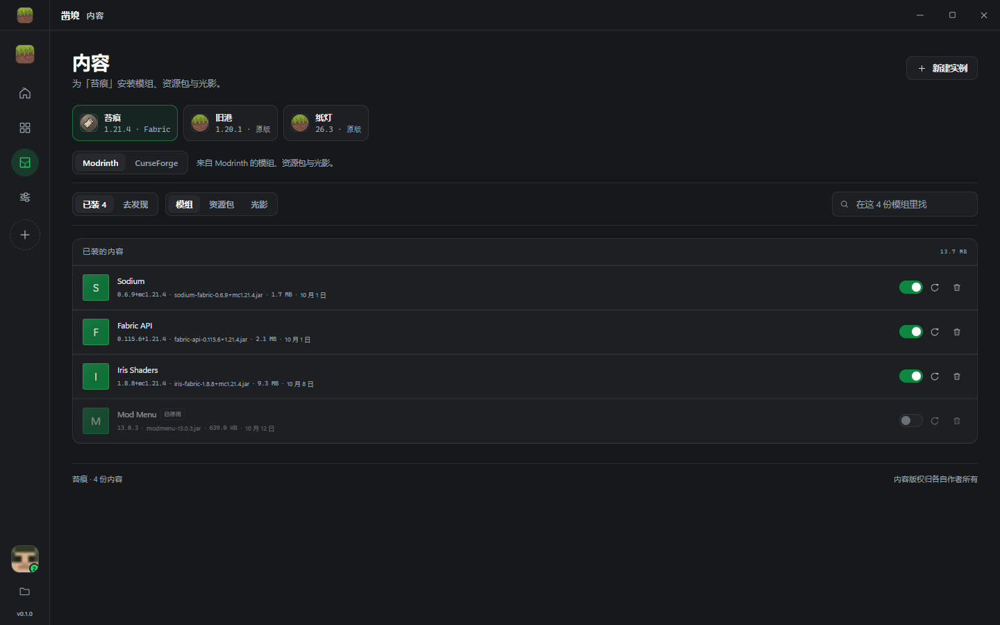
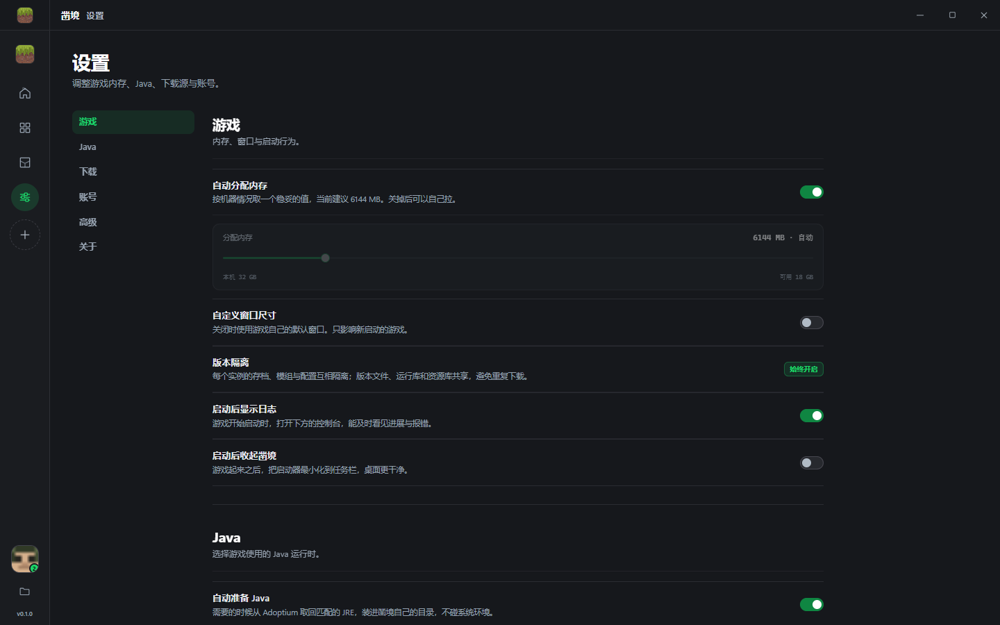

非官方启动器 · Windows · MIT 开源
凿境 CHISEL
一个把实例真正分开的 Minecraft Java 版启动器。存档、模组、配置各归各的目录； 下载在 Mojang 官方源和 BMCLAPI 之间自动挑快的那个；Fabric、Forge、NeoForge、 OptiFine 和整合包都在同一条路径里装完。




N O原版 · Fabric · Quilt · Forge · NeoForge · OptiFine，外加 .mrpack 与 CurseForge 整合包
它解决什么
每一条都对应代码里能翻到的东西，不是宣传词。
- 01实例隔离
-
一个实例一个目录：
instances/<id>/game放存档、模组、日志和崩溃报告。 版本 JSON、libraries、assets 放在shared/里跨实例共享，不重复占盘。删除实例送进回收站。1.20.1 的 Fabric 和 1.21.4 的 Forge 不会互相踩到 mods 文件夹。
- 02下载加速
-
对 Mojang 与 BMCLAPI 各取 64 KB 实测吞吐，结果缓存 10 分钟——镜像常常是一次快速跳转接一个很慢的回源， 首字节延迟骗得过、吞吐骗不过。只有明显更快的那边才排前面；即使手动选了「镜像优先」， 镜像慢到官方四分之一以下也会自动换回官方。≥ 8 MB 的文件按 Range 分片并发下载， 某一段卡住只重试那一段，已下字节不丢；HTTP/2 连接池开到 128，并发默认 16、可调到 32。
每个文件下载后校验 SHA1 与大小，不匹配就重下。
- 03加载器安装
-
Fabric / Quilt 走官方 profile 接口；Forge 优先跑官方安装器（
--installClient）， 失败回退 BMCLAPI；NeoForge 安装器里的 maven 地址重写到镜像；OptiFine 用无头入口调用它自己的optifine.Installer.doInstall()。装完的 profile 和库与手动安装一致，可以直接被别的启动器认出来。
- 04整合包
-
选一个
.mrpack或 CurseForge 的 zip，先看清单再装：文件数、加载器、游戏版本、体积。 Modrinth 文件走 CDN 直连，CurseForge 文件先解析出下载地址再下载，overrides/与client-overrides/原样落盘。导入后仍能逐个更新模组。
- 05账号与登录
-
微软设备码登录：代码自动复制、浏览器直接带着
otc=打开，只剩点两下。 也支持离线账号，以及 authlib-injector 外置登录（自动拉取 injector 与服务器元数据，注入-javaagent）。令牌用 Windows DPAPI（当前用户）加密后存在本地，凿境没有服务端。
- 06Java 管理
-
扫描 10 多个常见安装位置、注册表项，以及其他启动器和 Microsoft Store 包里的内置运行时， 按位数与主版本挑合适的那个。目标版本缺失时可以后台下载一份。
1.20.1 有 Java 21 也算够用，不会被误报成缺失。
- 07内容与光影
-
Modrinth 搜索、安装、更新、启停；CurseForge 链接安装。想装光影时会自动准备前置： Fabric 系装 Iris，OptiFine 系直接放 shaderpacks。
内容按实例记录在
.chisel-content.json，卸载只删自己装的文件。 - 08启动细节
-
按官方规则求值生成 JVM 与游戏参数，PerMonitorV2 高 DPI，自定义分辨率、启动后关窗、 日志面板与崩溃记录分析，每个实例还能单独设内存、参数和图标。
2K / 4K 屏上界面不会糊。
界面
三张真实截图，都是当前版本的样子。



下载
Windows 10 / 11 · x64
免安装，解压后运行 Chisel.exe。需要 WebView2 运行时（Windows 11 自带，Win10 若缺失会提示安装）。
程序未做代码签名，首次运行 SmartScreen 可能拦一下，选“仍要运行”即可。
最低要求
- Windows 10 1803 或更高
- 4 GB 可用内存（游戏本身另算）
- 磁盘取决于装多少个版本与整合包
- 正版登录需要 Minecraft Java 版账号
从源码构建
界面是独立前端，构建产物会被 .NET 项目当资源拷进去，所以顺序不能反。
# 1. 界面（Node.js 18+）
git clone https://github.com/LORQAQ/chisel-launcher.git
cd chisel-launcher/web && npm install && npm run build
# 2. 主程序（.NET 8 SDK）
cd .. && dotnet build src/Chisel.App -c Release
# 产物：src/Chisel.App/bin/Release/net8.0-windows/Chisel.exe隐私与安全
- 不打包游戏文件。Minecraft 的客户端、库和资产全部按官方 manifest 现场下载，逐个校验 SHA1 与大小。
- 没有服务端，没有遥测。设置、账号、日志都只写在本地数据目录里。
- 令牌本地加密。账号令牌用 Windows DPAPI（当前用户）保护，换一台机器或换一个用户都解不开。
- 下载域名收敛在白名单。Mojang、BMCLAPI、Modrinth CDN、CurseForge CDN、Forge/NeoForge Maven、authlib-injector 发布地址。
- 文件写入有边界。路径穿越检查、实例目录之外拒绝打开；WebView2 默认拒绝权限请求与自动下载。
- 微软登录用自己的 Azure 客户端 ID。设置页可填，密码只输入在微软的页面上。
数据默认在 %APPDATA%\Chisel\；程序目录放一个 portable.txt 或带 --portable 启动，就全落在 data/ 里。也可用 CHISEL_DATA_DIR 指定。
常见问题
用第三方启动器会被封号吗？
不会。凿境走的是微软官方验证接口和正版登录流程，不绕过授权、不修改验证逻辑。它只是不是 Mojang 官方出的那个客户端而已。
下载还是很慢，怎么办？
设置 → 下载里把来源从“自动”改成“BMCLAPI”试试；并发默认 16，网络好可以拉到 32。日志面板能看到每个文件实际命中的域名，方便判断是镜像问题还是本地网络问题。
CurseForge 为什么要 API Key？
整合包导入和文件解析用的是 CurseForge 公开元数据接口，能免 Key 工作，但限速比较紧。想要稳定的搜索体验，就在设置里填一个自己申请的 Key（CurseForge 免费提供）。
支持 Linux 或 macOS 吗？
目前只有 Windows，因为外壳是 WinForms。内核 Chisel.Core 不依赖 Windows 图形栈，把 DPAPI 换成别的加密后端后可以移植，欢迎来开 issue 讨论。
为什么用 WebView2 而不是原生控件？
为了把精力放在启动器逻辑而不是自绘控件上，同时保住较小的安装包和内存占用——它不是 Electron，渲染进程是系统里的 Edge。启动时只做列表读取，实例体积扫描延后到空闲时才跑。
能不能直接用别的启动器的游戏文件？
凿境按自己的目录结构管理共享库与资产，不会去改写别的启动器的目录。想把存档搬过来，直接把 saves 复制到实例的 game 目录就行。